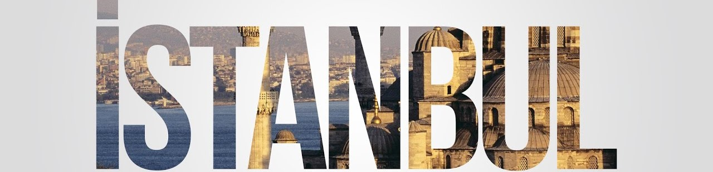
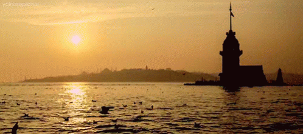

Önce hafiften bir rüzgar esiyor;
Yavaş yavaş sallanıyor
Yapraklar ağaçlarda;
Uzaklarda, çok uzaklarda
Sucuların hiç durmayan çıngırakları;
İstanbul'u dinliyorum gözlerim kapalı.
|  | ||
|  | ||
| Vikipedia | Anasayfa | İletişim |
|
|
İstanbul'u dinliyorum, gözlerim kapalı;
Önce hafiften bir rüzgar esiyor; Yavaş yavaş sallanıyor Yapraklar ağaçlarda; Uzaklarda, çok uzaklarda Sucuların hiç durmayan çıngırakları; İstanbul'u dinliyorum gözlerim kapalı. |
|